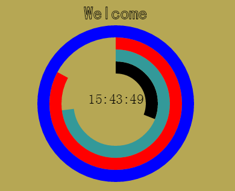
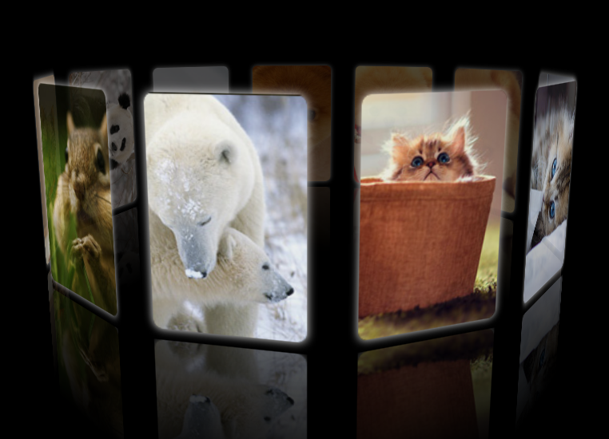
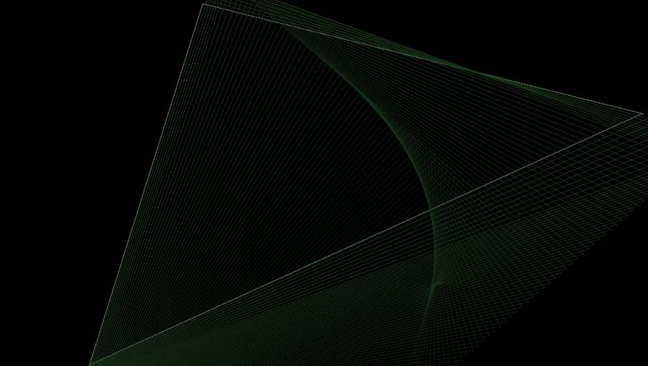

Demo
-

canvas模拟时钟
主要技术:canvas+定时器实现动态画图.比较简单的一个小程序,但是保函很多canvas知识。>
-

3D图片环
主要技术:CSS3运动.鼠标拖动图片环,实现图片的3D旋转,底部倒影效果也随之旋转(建议在chrome环境下查看).
-

许愿墙
主要技术:ajax数据交互.通过ajax请求php接口获取数据,操作DOM实现数据的展现.
-

模拟屏保效果
主要技术:canvas动态创建并用线条连接点,尾部阴影结合js把之前的运动的点位置存到数组里,并给相应的背景透明。>